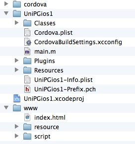
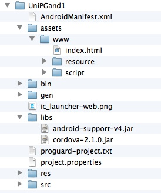

qxotica tech note 1
qooxdoo + PhoneGap = native iOS and Android apps
Contents
Introduction
iOS
Android
Todo
Introduction
At its most basic, PhoneGap is just a native wrapper around JavaScript,
HTML and CSS files. The PhoneGap SDK provides support for several mobile
platforms, notably iOS and Android. It would seem reasonable then that PhoneGap
could be used to wrap the client portion of a qooxdoo Web app to create native
apps for iOS and Android. This tech note describes the steps for doing that,
using the qxotica Unicodum demo app as an example.
iOS
Requirements
For this test I used the following:
Create the PhoneGap project
I found the PhoneGap Getting Started instructions for iOS to be a bit dodgy.
PhoneGap is now an Adobe product and the codebase is now open-sourced as
Apache Cordova. Somewhere along the way it looks like the docs did not get
a thorough review and they contain some artefacts and other confusing bits.
I unzipped the PhoneGap SDK and moved the entire resulting folder to my
Tools folder, but did not do anything else to these files. Then from a terminal
window I changed to where I wanted to create my new PhoneGap project and
entered a command of this form. Substitute your own path to the PhoneGap SDK and
other parameters.
~/Tools/phonegap-current/lib/ios/bin/create ./UniPGios1 com.myname.unipgios1 UniPGios1
This created a UniPGios1 folder containing a number of files.
Prepare the Unicodum client app
I added two more build job to the Unicodum config.json file so a different URL
can be used for the server with a native app compared to what's used with a
deployed Web app.
From qxotica's demos/Unicodum/client/unicodum folder, I then entered this:
./generate.py build-usephp-phonegap
Tip: To use the Pascal server app, use the build-usecgi-phonegap
job. In both cases, you'll need to edit the config.json and enter your
server app's URL.
Add the Unicodum client files to the PhoneGap project
For this test I just deleted all of the default files in the PhoneGap project's
www folder and substituted the contents of Unicodum's
build-ios folder (created in previous step). The PhoneGap project now
looks like Figure 1-1.
Figure 1-1. Folders and files in a typical PhoneGap iOS project

Cordova.plist - PhoneGap-specific settings you can customize.
UniPGios1.xcodeproj - Xcode project (see below).
www - folder with qooxdoo client files created in previous step; this is what
PhoneGap is "wrapping".
Run the PhoneGap app in the iOS Simulator
- Double-click UniPGios1.xcodeproj to open the PhoneGap project
in Xcode.
- Note that this is actually two Xcode projects in one. The one you're
interested in is what you opened. But it also includes CordovaLib.xcodeproj
containing the Objective-C plugin code for accessing native device functionality
from JavaScript (not covered in this note). In the Xcode Scheme list
(upper-left), be sure you select UniPGios1 > iPhone Simulator, not
CordovaLib > iPhone Simulator.
- Add your server's domain to the "whitelist" in Cordova.plist (under
Resources), under the ExternalHosts key. By default PhoneGap blocks all Internet
access, so you need to indicate that your server is okay. More info is here:
docs.phonegap.com/en/2.1.0/guide_whitelist_index.md.html.
- Choose Product | Run. Xcode will compile and run the app in the iOS
Simulator.
Run the PhoneGap app on an iOS device
Here's one other place where the docs were not up to date.
- To compile for an Arm device with Xcode 4.5, make sure that both projects'
TARGETS | Build Settings are set to Standard (armv7, armv7s) for ARCHS and
armv7 armv7s for VALID ARCHS.
- On the main project's TARGETS | Summary tab, set the Deployment Target
to 4.3 or higher since Xcode 4.5 doesn't support earlier versions of iOS.
- Select your device from the Scheme list and choose Product | Run. Xcode
will compile, install and run the PhoneGap app on your device.
How does it look?
It looks and feels exactly like the Unicodum Web app, since it's running the
same JavaScript and other files that the Web app is using. It probably starts
up a bit faster since it doesn't have to download the client files from the
Web, but this is essentially the same app. You can think of it as a Web app
that's been "installed" on your device.
Is it "native" enough? That's for you to decide. Note that many iOS apps
have been developed with PhoneGap:
www.phonegap.com/app.
Android
Requirements
For this test I used the following:
Once installed you also have to download some additional pieces. To avoid
clogging my system with unused stuff, I only downloaded the basics with the
Android SDK Manager (unchecking some of the items it suggested):
- Android SDK Platform-tools
- SDK Platform
- ARM EABI v7a System Image
- Android Support Library (under Extras)
Tip: While you're at it in the Android SDK Manager, create at
least one virtual device (Tools | Manage AVDs) if you want to test your
PhoneGap app in the Android emulator (but be warned, the emulator is dreadfully
slow).
In Eclipse, I followed the instructions and installed the ADT Plugin
(developer.android.com/tools/sdk/eclipse-adt.html).
Create the PhoneGap project
Follow the PhoneGap Getting Started instructions. Don't create the dummy
index.html file in step 4 since we'll be using the Unicodum client files.
Prepare the Unicodum client app
You can use the same client files created for iOS above.
Add the Unicodum client files to the PhoneGap project
Copy the contents of Unicodum's build-ios folder into the Eclipse
project's assets/www folder. The PhoneGap project now looks like
Figure 1-2.
Figure 1-2. Folders and files in a typical PhoneGap Android project

www - folder with qooxdoo client files; this is what PhoneGap
is "wrapping".
Run the PhoneGap app in the Android emulator
Follow the PhoneGap Getting Started instructions.
Note that running the app in the emulator does not appear to install it
so that you can launch it later independent from Eclipse.
Run the PhoneGap app on an Android device
Follow the PhoneGap Getting Started instructions. I don't have access to any
Android devices, so I was unable to test this step.
How does it look?
It looks identical to the Web app in a browser, but runs very slow in
the emulator.
To-do
In at least one other way, the PhoneGap Unicodum native app is still very much
a Web app: that is, it's still dependent on the server app. If the device doesn't
have Internet access, you won't be able to run the app. Of course, many mobile
apps are like this: think e-mail, stocks, weather, maps, etc. - many of these
kinds of apps are of limited use without an Internet connection.
What about moving the server-side Pascal code and database to the device too?
Well, if your database is large or frequently updated, it may make sense
to leave it on the server. But in the case of Unicodum, the Unicode data
in its database is not updated frequently and the database itself is modest
in size. This would be a good candidate for a standalone native app that
can be used without an Internet connection. But that's for a future tech
note.
Copyright 2012 by Phil Hess.
macpgmr (at) fastermac (dot) net
First posted Oct. 14, 2012.